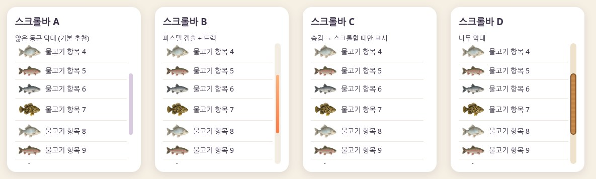
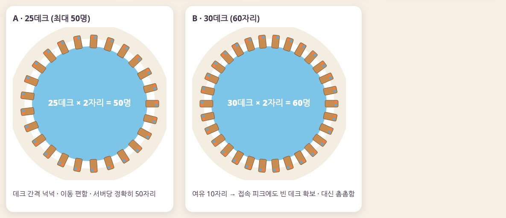
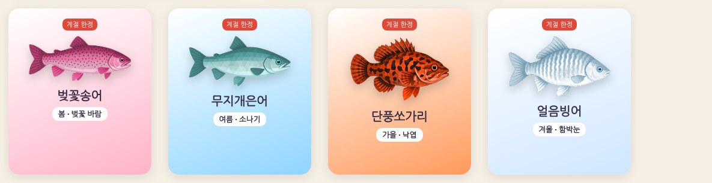
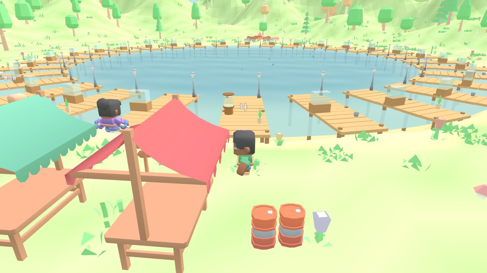
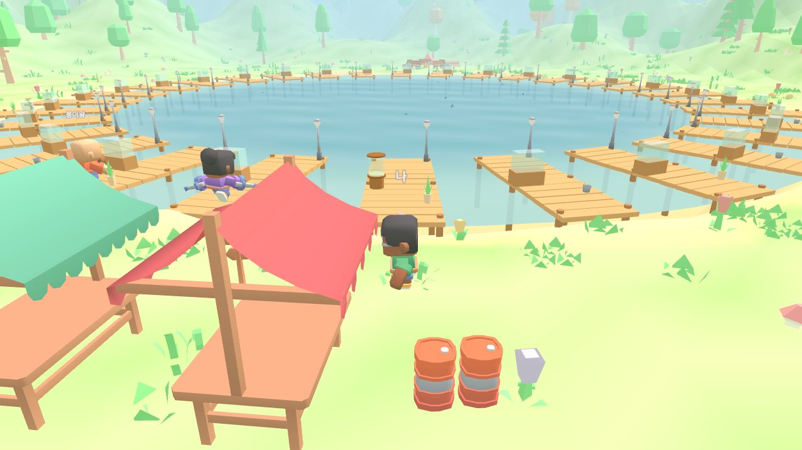
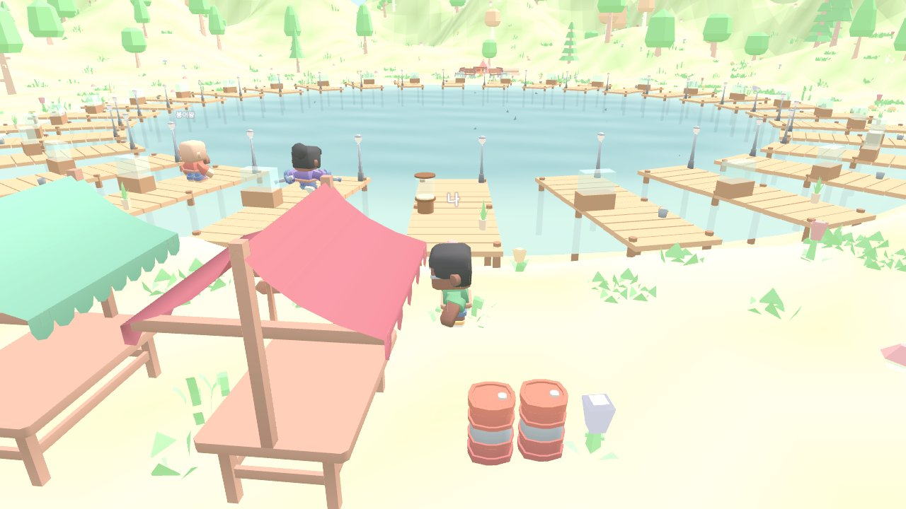
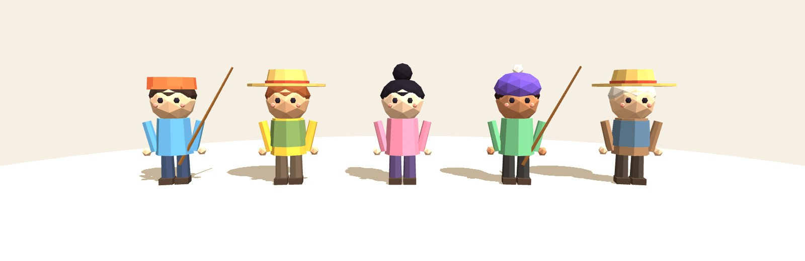
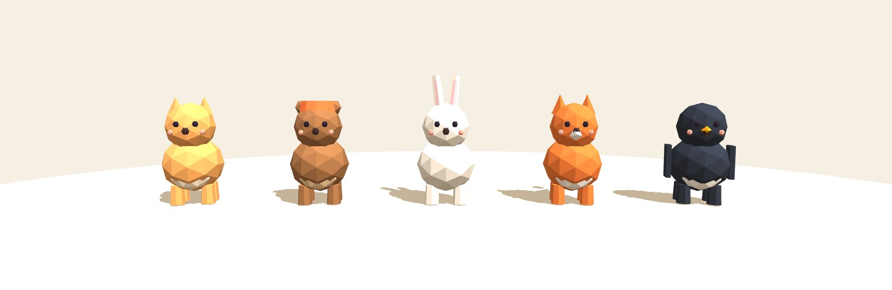

이미지를 누르면 크게 볼 수 있어요 (←/→ 이동, ESC 닫기). 고르신 안을 알려주시면 게임에 넣을게요.
A 얇은 둥근 막대 · B 파스텔 캡슐 · C 평소엔 숨김(스크롤할 때만 표시) · D 나무 막대

2자리 데크 기준이에요. 50명 서버라면 25데크는 딱 맞고, 30데크는 접속이 몰릴 때도 빈 자리가 남아요.

벚꽃 바람·소나기(여름)·낙엽·함박눈 날씨에만 나와요. 이미 게임에 들어가 있어요.

실제 게임 화면을 조명/안개/색감만 바꿔 찍은 거예요. 방향을 고르시면 그 톤에 맞춰 지형 디테일(바위, 물결, 풀)을 더할게요.



게임과 같은 Three.js로 만든 모델을 렌더링했어요. 고르신 캐릭터만 게임에 넣을게요.

